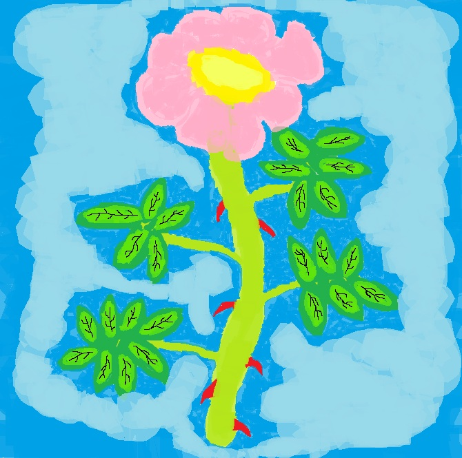

(clique dessus quand tu veux passer à la suite)

Le prénom Nesrine tire son origine du mot arabe signifiant "églantier".
Cette fleur, connue pour sa beauté sauvage et sa robustesse, symbolise la délicatesse, la douceur et une beauté naturelle.
En tant que prénom, Nesrine évoque la grâce et l'élégance, avec une touche de sophistication naturelle.